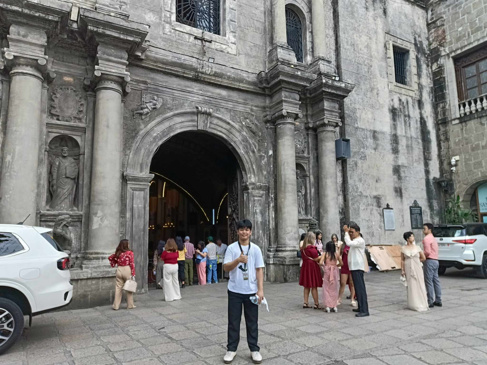
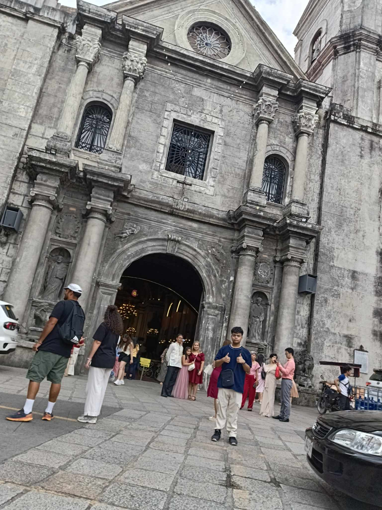
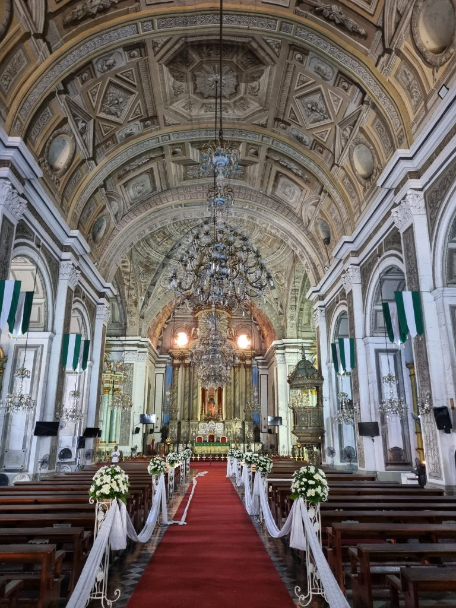

Overview
The San Agustin Church, officially known as the Church of the Immaculate Conception of San Agustin, is the oldest stone church in the Philippines. Completed in 1607, it has withstood numerous natural disasters and wars, including World War II, where it was the only building left intact in Intramuros.
Recognized as a UNESCO World Heritage Site in 1993 under the collective title Baroque Churches of the Philippines, the church is renowned for its Baroque architecture, intricate trompe-l'œil ceiling paintings, and historical significance.
Photo Gallery



🏛️ Architectural and Historical Highlights
- Oldest Stone Church in the Philippines: Completed in 1607, it's the oldest stone church in the country, built with adobe stones from Bulacan and Rizal.
- Baroque Architecture: The church showcases Spanish Baroque design with a cruciform layout, ornate carvings, and a majestic altarpiece.
- Trompe-l'œil Ceiling Paintings: The vaulted ceiling features stunning 3D illusion paintings by Italian artists Alberoni and Dibella.
- Earthquake-Resistant Design: Thick walls and heavy buttresses represent "Earthquake Baroque" style, made to withstand frequent tremors.
- UNESCO World Heritage Site: Declared a UNESCO site in 1993 as part of the "Baroque Churches of the Philippines."
- Survivor of Disasters and War: The only structure in Intramuros to survive WWII bombings; it also withstood several earthquakes.
- Historic Tombs: Final resting place of notable figures including Spanish conquistador Miguel López de Legazpi.
- Active Worship Site: Still hosts regular Masses and is a popular location for weddings and religious events.
Find It Here
User Reviews
Loading average rating...